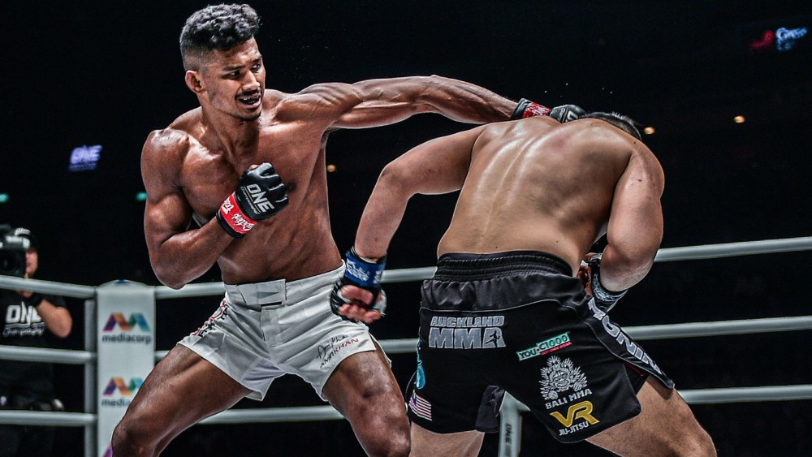

What is MMA?
Frequently billed as the Worlds fastest growing sport,
MMA combines wrestling and striking martial arts into one complete discipline,
including techniques from Thai-boxing, judo, Brazilian jiu jitsu and boxing.
Although contemporary MMA is only as old as the world’s first website and phenomenally proliferated with the growth of the internet,
its roots can be traced as far back as Pankration in the ancient Olympic Games.

FIELD OF PLAY
- The MMA Ring is unique in combat sports as it eliminates advantages to competitors well versed in the art of cutting off the ring as a kick boxer may do,
or the need to reset matches due to stepping out of the FOP.
It allows the match to play out with as little interference as possible.
- The enclosed MMA Ring creates a neutral arena to best showcase the skills of MMA’s athletes.
- The MMA Ring originated under US state athletic commissions to provide maximum safety to athletes
- The MMA Ring consists of a canvas,
safety padding and fences as specified in IMMAF – WMMAA Amateur MMA Rules
and the Professional Unified Rules of MMA.
- There are many examples of athletes competing in MMA in boxing rings who have fallen from the ring and sustained injuries
Top 5 Greatest MMA boxers
- Fedor Emelianenko
- Demetrious Johnson
- Anderson Silva
- Jon Jones
- Georges St-Pierre